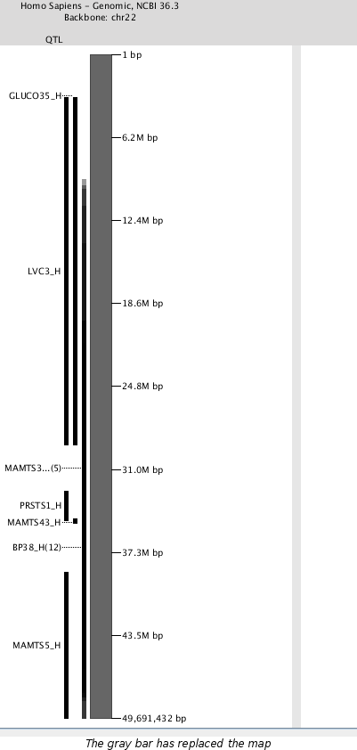

Hiding Data
This page tells how to hide data. If you have hidden data that you would like to show again, visit
the showing hidden data page.
Hiding a Map
Hiding a map will make it temporarily hidden. All of the loaded data (annotation, segments, etc.) will hide
along with the map. It will be replaced by a vertical gray line.
- Begin by selecting a map. If you need help doing this, visit the
making a selection page and find the select a map section.
- Select "Map -> Hide Selected" from the menu bar.
- The selected map should now be hidden. Your window should look like the picture below.
Note: The gray bar will be in the same location as the map was.

Notes:
- You can view which map is represented by the gray line by placing your cursor on the line
Hiding Annotation
Hiding annotation will hide both the label and the bar indicating its position.
Hide All Selected
- Select annotation. You can reference the making selections
page if you need help on doing this.
- After you have selected annotation, choose "Annotation -> Hide -> All Selected"
from the menu bar.
- The selected annotation should now be hidden. If all of the annotation on a map of a particular
type is hidden as a result, the column label will also hide.
Hide All in Selected Intervals
- First you need to select an interval. This is done by clicking and dragging on a segment. The
selected interval will become shaded in green. If additional maps are visible, the corresponding
intervals on those maps will also be selected.
Note: Connecting lines will only be drawn to maps adjacent to the map on which the interval
was drawn.
- Choose "Annotation -> Hide -> All in Selected Intervals" from the menu bar.
- All annotation regardless of type that was in the selected interval should now be hidden.
Hide All of Type...
- Choose "Annotation -> Hide -> All of Type... -> ---------" from the menu. Under
"All of Type..." will be a listing of each type of annotation that is currently
loaded on any map.
- Select the type of annotation you want to hide.
- All annotation of the selected type will be hidden. This includes every map that the annotation
is loaded for.
Additional Information
- There will be no warning message when you choose to hide data. It will be done as soon as the option is
chosen.
- There is not any visible indication that annotation has been hidden.
- When an entire column of annotation is hidden, it will collapse and the label at the top will hide also.
See Also